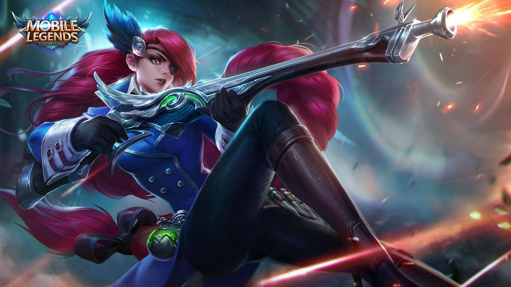

|  | |
|
Лесли
|
|
|
Лесли - герой класса стрелок и убийца. Её особенностю является огромный урон в поздней игре
|
|
"Ты даже не узнаешь,промазала ли я"
-Лесли |
 |
Дата выхода: - 6 декабря 2019 года |
|
| История героя: | |
| Отец Лесли работал главой службы охраны в семье Вэнса, где они проживали. Однажды во время атаки другой семьи он был убит. Лесли подняла винтовку своего отца и завершила миссию по охране, которую не смог выполнить ее отец. Каждый ее выстрел попадал точно в цель, тем самым убивая один за другим врагов, после каждой выпущенной пули, по ее щекам катилась слеза. Патриарх семьи, удочерил Лесли и отдал под ее опеку Харли, который был наследником семьи. Подрастающий маг был настоящим проказником, которого могла держать «в рамках» только его защитница. Узнав что ее подопечный находится в опасных землях Лесли отправилась за ним. Ее удивлению не было предела, когда вместо озорного мальчишки, она увидела как сильно поменялся ее сводный брат. В этот момент она приняла решение следовать за Харли и помогать ему из тени. Вскоре по Землям Рассвета понеслись рассказы о волшебном мальчике, за которым следует черный снайпер. | |
Слабые и сильные стороны: Слабые:
Cильные:
Сборка героя:
Эмблемы
Выбор линии:
Так, как Лесли первостепенно - стрелок, в начале игры она отправляется за красным баффом.
Описание навыков:
~Убийца в инвизе
Пассивное: Смертельный выстрел
Лесли получает 5 единиц энергии для нанесения урона врагам обычными атаками. Если Лесли не получит урона в течение 5 секунд, то следующая обычная атака будет иметь большую дистанцию, 40% шанса крита. Использование умения сбрасывает время восстановления смертельного выстрела.Каждая единица физического проникновения, принадлежащая Лесли, будет добавлять 1% критического удара (процент физического проникновения не учитывается).

1 Навык: Мастер маскировки
Лесли войдет в камуфляж на 3 секунды, увеличив скорость передвижения на 30% и физическую атаку на 50. Атака или получение урона отменит маскировку. Враги могут обнаружить камуфляж Лесли по искажениям вокруг него.

2 Навык: Тактическая граната
Лесли бросает гранату вперед, которая взрывается в области впереди героя. Нанося 150 (общая физическая атака + 50%) физического урона и отолкнув противника, также Лесли отпрыгнет назад. Использование этого умения отменит снайперский выстрел и выпустит основную пулю. (Дополнительная атака будет запущена, только если основная пуля не была выпущена)

Ультимативная способность: Снайперский выстрел
Лесли фиксирует движения всех врагов в одной области. Затем она выбирает одного из героев и стреляет 4 смертельными пулями, нанося 200 (+ 80% физической атаки) + 5% целевого HP, потерянного в виде физического урона. Каждая пуля, которая попадает в цель, восстанавливает 10 единиц энергии. Эту пулю могут держать другие вражеские герои.

|